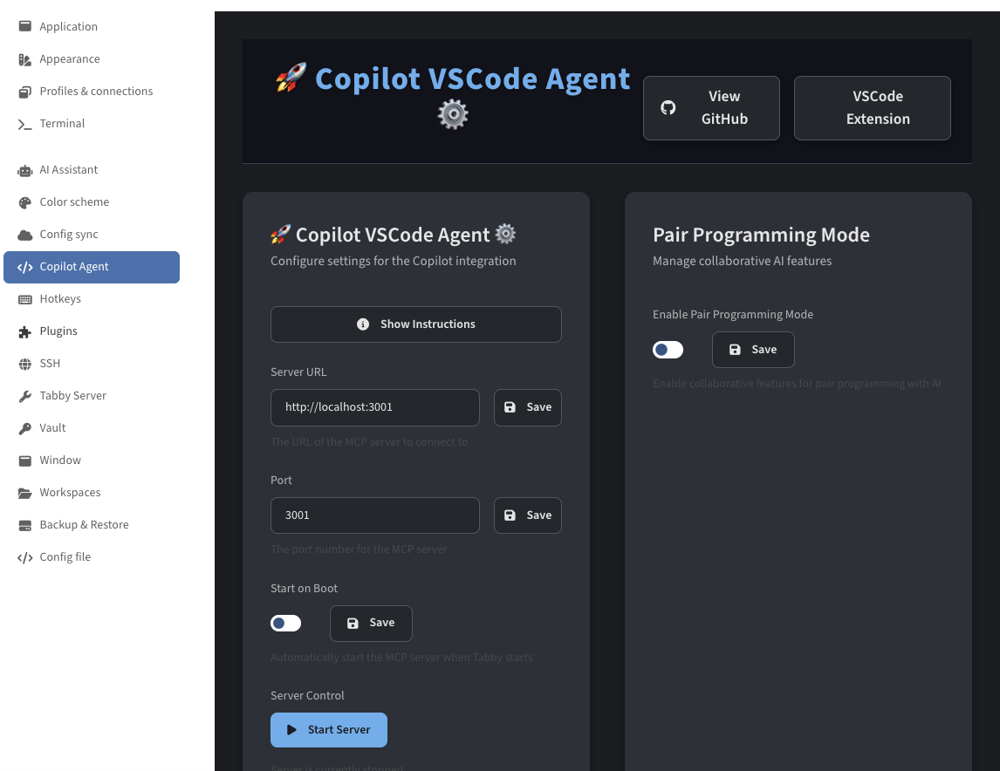
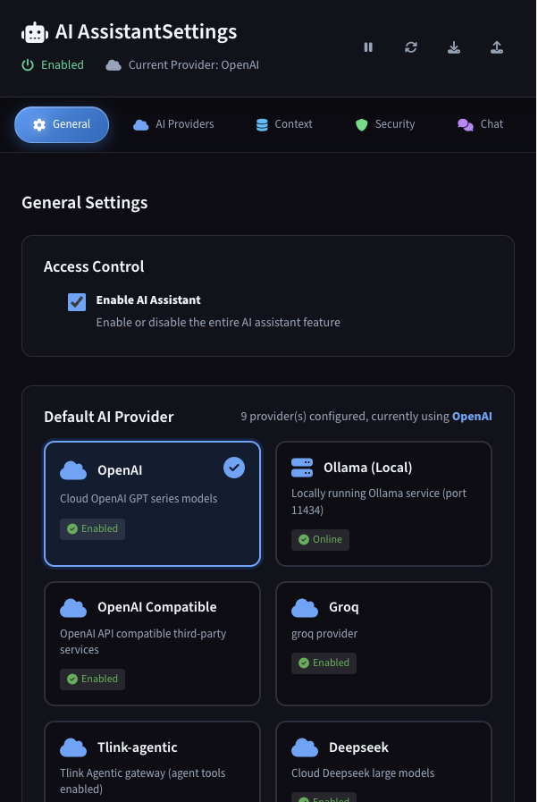

Features
A complete development environment
Everything you need to code, debug, and deploy — without leaving the app.
Monaco Code Editor
The same editor engine that powers VS Code, deeply integrated into Tlink Studio with multi-document editing, diff views, and intelligent code assistance.
- Multi-document tabs with syntax highlighting
- Side-by-side diff view for file comparisons
- File tree with full/opened modes
- ANSI decoration support for terminal output
- External conflict detection for changed files
- Auto-save and state recovery on restart

Topology Diagram Editor
Visualize network topologies, system architectures, and infrastructure layouts with an integrated diagram editor that reads from YAML/JSON data.
- Nodes, links, shapes, and text elements
- Directed and curved link support
- Multi-select with marquee selection
- Zoom, pan, and color palette customization
- Sticky notes for annotations
- Export topology data as YAML/JSON
Network topology visualization with nodes, links, and annotations
Multi-Window Architecture
Three dedicated window types, each optimized for its purpose. Work across multiple screens with synchronized themes and state.
- Code Editor window (1200x800) with file tree & tabs
- AI Assistant window (800x700) for chat & suggestions
- Terminal window with local shell & split panes
- Theme sync across all windows (dark/light)
- Independent window lifecycle management

Git Integration
Built-in Git support for tracking changes, viewing branch status, and managing your code directly from the editor.
- Branch and commit status tracking
- File status detection (modified, untracked, staged)
- Remote repository information
- Diff view integration with Monaco editor